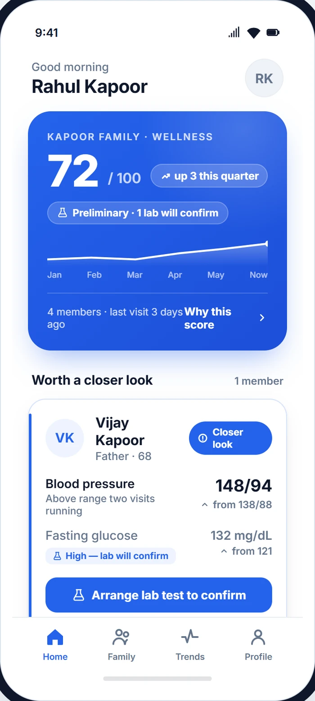
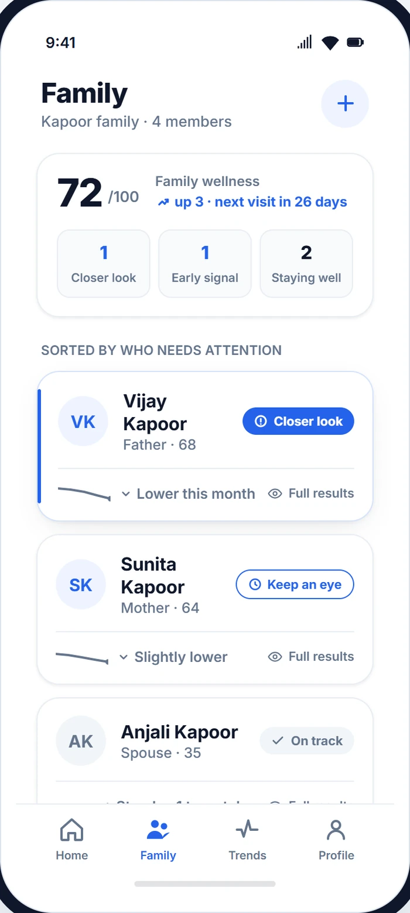
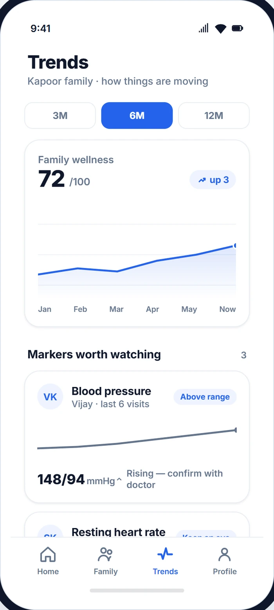
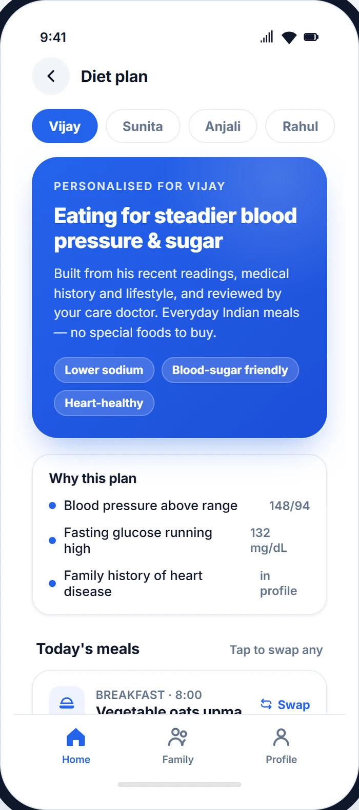
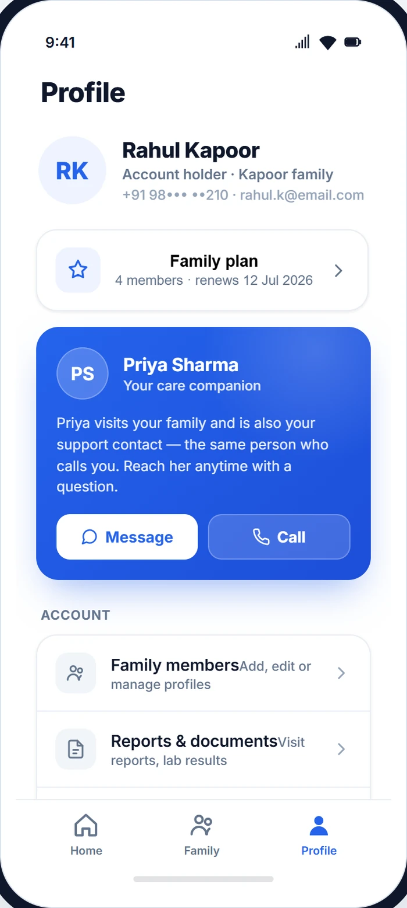

Continuous, not episodic
Twelve readings a year per parameter, not one. We replace the annual snapshot with a year-long trend line.
The people you love don't fall ill on a schedule. So why check on them just once a year?
Thuna brings the check-up home — every month — and reads the trend, not the snapshot. The small drifts an annual visit sleeps through are exactly the ones we're built to catch. Twelve home visits a year, every reading screened, and a doctor on anything flagged.
Every visit lands in a calm, plain-language app — one wellness score for the household, who needs a closer look, how each marker is trending, and a diet plan tuned to each member. No raw jargon, no panic.





Actual screens from the Thuna member app · same design language as this site.
Almost every chronic disease that kills Indians under 60 — hypertension, diabetes, kidney drift, lipid disorders — is invisible for years before it shows. An annual checkup sees one snapshot and misses the eleven months in between. Thuna replaces the snapshot with a trend line.
Twelve readings a year per parameter, not one. We replace the annual snapshot with a year-long trend line.
One household, one record, one monthly visit — up to four members. Health you finally talk about together.
Drift detected → a virtual doctor or a partner lab, the same week, at member rates. A number is never left for you to decode alone.
Continuous vitals at every visit, deeper labs only when your trend asks for them — never on a fixed calendar you don't need.
Captured at home, beside your last eleven readings.
When drift is detected, we order the right deeper test from an NABL-accredited partner lab — never a fixed schedule. You never pay for tests you don't need.
Each reading lands beside the last eleven. Drift-detection compares against the household's own baseline — not population averages — and flags what a doctor reviews the same day. One real case, April 2026.
Caught ~14 months earlier than a typical annual checkup would have — before symptoms ever appeared.
Feedback from quarterly review calls. Names changed for privacy on request.
“My father's BP was drifting up over our first months with Thuna. The doctor caught it — and routed us to a tele-consult before any symptoms. We changed his meds. That's the entire point.”
“Felt expensive at first. Then we did the maths: one ICU night in this city is a year of Thuna. My wife and I don't queue up for hospital checkups any more.”
“What I didn't expect: the app summaries. My mother reads them. My sister reads them. We finally talk about my parents' health as a family — not in a panic.”
The annual plan is the product — it's how we build your family's longitudinal record. A single visit exists for households who want to try us once first.
Billed ₹6,000 / year per household · no-cost EMI available
Start the yearPay per visit · convert to annual anytime
Book one visitWhat you'd otherwise spend
Annual Thuna for a household: ₹6,000 — effectively ₹500 a month. No insurance markup, no hospital admin overhead.
Lab tests run through NABL-accredited partner labs. Doctor consults are virtual, conducted by partner doctors. Thuna does not provide insurance products. Pricing is exclusive of GST where applicable.
Real households, real visits, real longitudinal records — close to home.
Not sure if we're near you yet? Message us — we're adding more areas soon.
Because prevention is a trend, not a snapshot. A subscription means twelve visits a year, so every reading lands beside your last eleven — that's what lets us catch drift before it becomes a diagnosis. Pay-per-visit gives you a number; the annual plan gives you a story. You can still try us with a single visit first, and convert anytime.
A trained companion — background-checked, ID-verified and put through our six-week home-care protocol. You see the same faces each visit. When blood needs to be drawn, a registered Nursing Assistant attends instead. Every reading is screened the same day, and a doctor reviews anything that looks off.
We're live in Dwarka and Faridabad, with an average travel radius of about 30 minutes. Tell us your locality on WhatsApp and we'll confirm the next available slot.
Yes. Thuna is DPDPA-compliant. Your records are consented, structured and used only to track your health over time and flag drift for doctor review. Lab work runs through NABL-accredited partner labs, and we never sell your data.
They sit on top of the subscription at member rates — discounted versus market and billed only when used. If a trend flags something, we line up a virtual doctor consult (from ₹299) or order the right deeper test from an NABL-accredited partner lab (HbA1c from ₹349, lipid profile from ₹399), often drawn at home. Only when your trend warrants it — never a fixed schedule.
Emergency ambulance routing is included (partner-billed), and if a reading needs urgent attention it's flagged the same day and a doctor reviews it, routing you onward. Thuna is preventive monitoring, not a 24/7 emergency room — but you're never left to interpret a worrying number on your own.
Cancel anytime — there's no lock-in. The annual plan is the best way to build a longitudinal record, and the single-visit option lets you try Thuna once before committing to the year.
Tell us your city and household size on WhatsApp. We'll write back with the next available slot — usually within a business day.
DPDPA-compliant · your family's data stays private